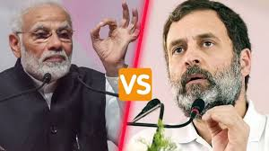
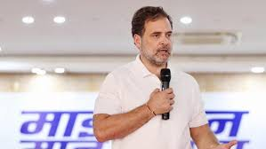

Narendra Modi vs Rahul Gandhi: Who Will Lead India in 2025?
The 2025 Lok Sabha elections are poised to be one of the most closely watched in recent Indian history. Two towering figures stand at the forefront of this battle — Narendra Modi, the incumbent Prime Minister who has led India for over a decade, and Rahul Gandhi, the Congress leader striving to rejuvenate his party and present a strong alternative.
Comparison: Narendra Modi vs Rahul Gandhi
| Category |  Narendra Modi Narendra Modi |
 Rahul Gandhi |
|---|---|---|
| Political Party | BJP (Bharatiya Janata Party) | INC (Indian National Congress) |
| Position | Prime Minister of India (since 2014) | MP from Wayanad & de facto leader of INC |
| Leadership Style | Decisive, nationalist, highly centralized decision-making | Empathetic, collaborative, focused on democratic consultation |
| Ideology | Hindutva, economic reforms, strong national security | Secularism, welfare-oriented growth, inclusive governance |
| Support Base | Urban middle class, business community, Hindu nationalist groups | Youth, minorities, rural poor, progressive thinkers |
| Key Focus Areas | Economic growth, national security, global diplomacy, infrastructure | Welfare programs, education, jobs, strengthening democratic institutions |
Ideology and Vision
Narendra Modi envisions a self-reliant India (Atmanirbhar Bharat) with a strong central government that drives development. His policies often prioritize infrastructure, national security, and a pro-business economic environment. Modi’s Hindutva ideology resonates strongly with BJP's core voters, projecting India as a nation rooted in cultural nationalism.
Rahul Gandhi, on the other hand, promotes secular and inclusive governance. He emphasizes the protection of minority rights, strengthening democratic institutions, and bridging the economic inequality gap. Gandhi’s approach is more consultative, focusing on social welfare schemes and expanding opportunities for India’s youth and marginalized communities.
Party Background
BJP, under Modi’s leadership, has transformed into an election-winning machine with an extensive ground-level cadre. The party uses data-driven campaigns and a strong presence on social media to dominate narratives. BJP’s ideological backbone, the RSS, also provides immense organizational support.
INC, India’s oldest political party, has struggled with internal divisions in recent years. However, Rahul Gandhi is working to revive the party’s grassroots network. Congress focuses on welfare policies and building broad coalitions, positioning itself as a check against what it calls BJP’s “authoritarian tendencies.”
Leadership Journey
Narendra Modi rose from humble beginnings in Gujarat, first as a state leader and later as the national face of BJP in 2014. His tenure is marked by significant projects such as the Goods and Services Tax (GST), the abrogation of Article 370 in Kashmir, and high-profile foreign policy initiatives. Critics, however, point to increased polarization and challenges in job creation.
Rahul Gandhi entered politics in the early 2000s but has often been criticized for inconsistency. In recent years, he has attempted to rebrand himself as a mass leader, undertaking long marches such as the Bharat Jodo Yatra. Gandhi has also sharpened his attacks on BJP’s economic policies and alleged institutional weakening under Modi.
Public Support and Criticism
Modi is celebrated by supporters for his strong leadership and international stature. His focus on nationalism and security has earned him unwavering loyalty from BJP's base. Detractors accuse him of undermining democratic checks and balances and failing to tackle unemployment adequately.
Rahul Gandhi is praised for being approachable and championing marginalized groups. Critics, however, often question his leadership experience and ability to manage large-scale political campaigns effectively.
Final Thoughts
The 2025 Lok Sabha elections will be a choice between Modi’s promise of a strong, development-driven India and Rahul Gandhi’s vision of inclusive governance. While Modi leverages his decade-long incumbency and international appeal, Gandhi hopes to ride the wave of anti-incumbency and attract voters seeking a more democratic and welfare-oriented approach.
For more detailed political comparisons and analyses, explore our latest articles.